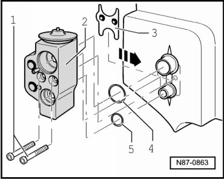

Expansion Valve
Refrigerant Circuit
Expansion Valve
Removing
- Extract refrigerant circuit, using A/C Service Station (VAS 6007A), only then open the refrigerant circuit.
- Observe notes. Refer to --> [ Engine Compartment Refrigerant Circuit Components, 2 Zone and 4 Zone ] Engine Compartment Refrigerant Circuit Components, 2 Zone and 4 Zone.
- Remove air intake shroud.
CAUTION!
There is a danger of ice-up.
Refrigerant leaks out if refrigerant circuit is not discharged.
Refrigerant must be extracted before opening the refrigerant circuit. If the refrigerant circuit is not opened within 10 minutes after extracting it, pressure may build up in the circuit again. The refrigerant must be extracted again.
- Remove screws - 1 - (10 ± 1 Nm) and remove refrigerant lines from expansion valve.

- Remove the bolts - 1 - from the expansion valve - 2 - and remove the expansion valve.
- Be careful of the retaining plate - 3 -.

1. Screws (10 ± 1 Nm)
2. Expansion Valve
3. Retaining plate
4. O-Ring 14.3 mm; 2.4 mm
5. O-Ring 10.8 mm; 1.82 mm
Installing
Installation is carried out in the reverse order, when doing this note the following:
- Replace O-rings - 4 - and - 5 - and coolant pipes.
The threaded connection tightening specification is (10 ± 1 Nm).